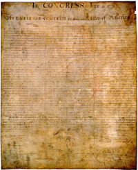
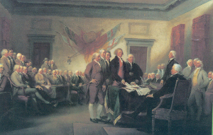
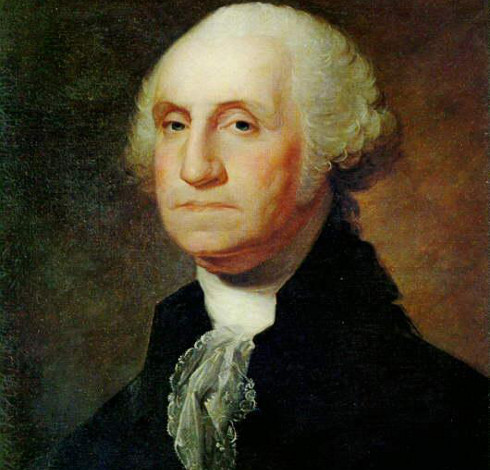
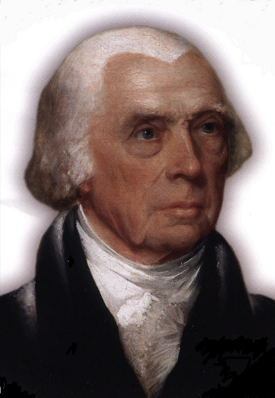
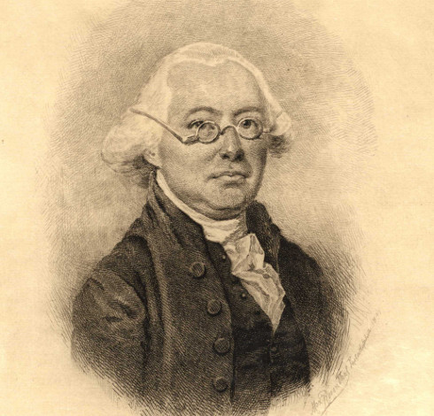

 
 "People can decide with as much propriety on the... amendment, of the Constitution, ...as ourselves, for I do not conceive that we... have more wisdom or possess more virtue than those who will come after us."
"Unless... the people retains sufficient control over...representative governments it will be perverted... to the perpetuation of wealth and power in the individuals... selected for the trust.”
 "The People were, in fact, the fountain of all power, and by resorting to them, all difficulties were got over. They could alter constitutions as they pleased."
 "All power is originally in the People and should be exercised by them in person, if that could be done with convenience, or even with little difficulty."
The Framers were informed by the People’s rejection of a Massachusetts constitution in 1778 that perpetuated slavery
As a result, the Framers sacrificed the principle of the Declaration of Independence and the views of the Founding Fathers that the People, as lawmakers, can directly alter their government